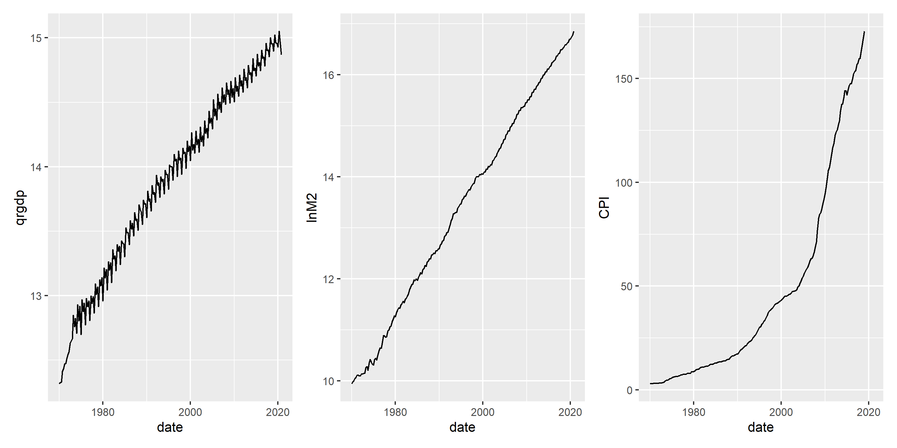
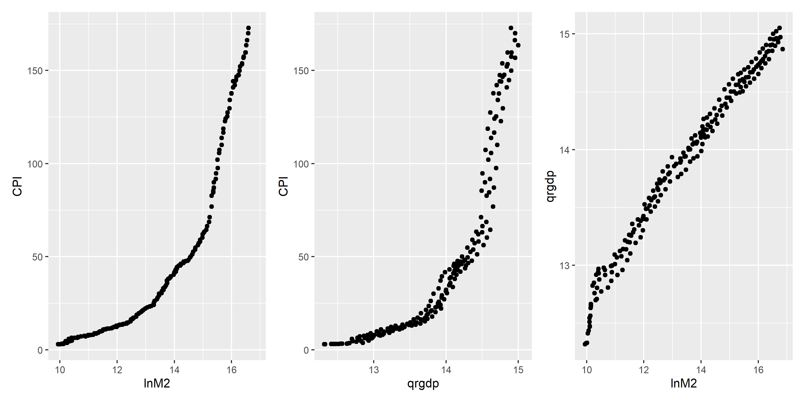
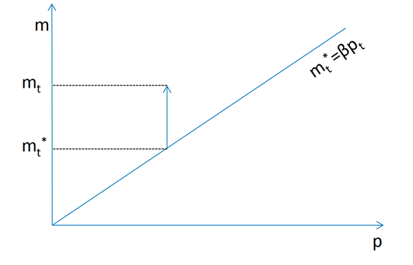
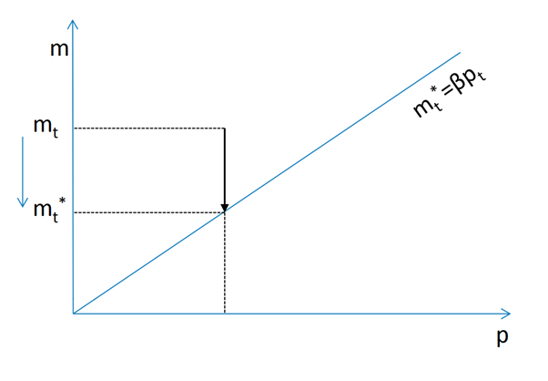
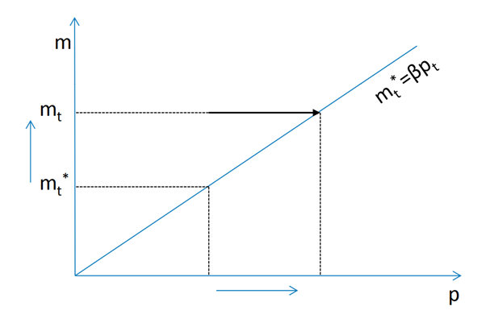
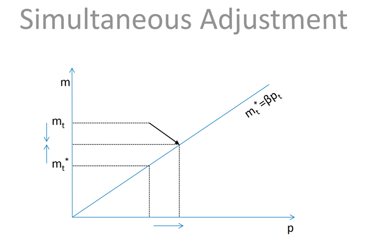

Main Objectives
Concept of cointegration
Studying the dynamics of cointegrated variables
Methods for testing cointegration
How to estimate a system of cointegrated variables
VAR and VECM difference
Graphs of data
## # A tibble: 204 × 12
## date...1 quarter Quarter Year date...5 QRGDP M2_mill_rs
## <dttm> <dbl> <chr> <dbl> <chr> <dbl> <dbl>
## 1 1970-01-01 00:00:00 1 Q1 1970 1970Q1 223168 20800
## 2 1970-04-01 00:00:00 2 Q2 1970 1970Q2 225140 21500
## 3 1970-07-01 00:00:00 3 Q3 1970 1970Q3 225980 22213
## 4 1970-10-01 00:00:00 4 Q4 1970 1970Q4 245436 22965
## 5 1971-01-01 00:00:00 1 Q1 1971 1971Q1 251348 23632
## 6 1971-04-01 00:00:00 2 Q2 1971 1971Q2 259999 24643
## 7 1971-07-01 00:00:00 3 Q3 1971 1971Q3 261355 24718
## 8 1971-10-01 00:00:00 4 Q4 1971 1971Q4 271232 24300
## 9 1972-01-01 00:00:00 1 Q1 1972 1972Q1 279965 24324
## 10 1972-04-01 00:00:00 2 Q2 1972 1972Q2 285432 25134
## # ℹ 194 more rows
## # ℹ 5 more variables: LNRGDP <dbl>, LNM2 <dbl>, CPI <dbl>, inf <dbl>,
## # `inf cpi` <dbl>
These graphs indicate all three variables are non-stationary.
Scatter plot of the variables

Money and Price
Suppose that in the long run \(m_t=\beta p_t+e_t\) where \(\beta>0\) That is \(m_t\) and \(p_t\) are cointegrated and money nuetrality hypothesis would imply \(\beta=1\). If \(m \uparrow\) s.t \(m_t-\beta p_t>0\), what would be the dynamics?
Deviation and now what

\(m_t\) is doing all the adjument

\(m^*_t\) is unchanged and \(m_t\) \(\downarrow\)
\(\Delta m_t=\alpha_m(m_{t-1}-m^*_{t-1})\) where \(\alpha_m<0\) Short run change in \(m_t\) is a linear function of the deviation from the long run from the long run equilibrium
\(m^*_t\) is doing all the adjument
 \(m_t\) is unchanged and \(p_t\) and \(m^*_t\) \(\uparrow\) \(\Delta p_t=\alpha_p(m_{t-1}-m^*_{t-1})\) where \(\alpha_p>0\) Short run change in \(p_t\) is a linear function of the deviation from the long run from the long run equilibrium
Both \(m_t\) and \(p_t\) adjust
 \(m_t\) and \(p_t\) are adjusting simultaneously \(\Delta m_t=\alpha_m(m_{t-1}-m^*_{t-1})\) \(\Delta p_t=\alpha_p(m_{t-1}-m^*_{t-1})\) which is basically error/equilibrium correction model. !…
\(m_t\) and \(p_t\) are adjusting simultaneously \(\Delta m_t=\alpha_m(m_{t-1}-m^*_{t-1})\) \(\Delta p_t=\alpha_p(m_{t-1}-m^*_{t-1})\) which is basically error/equilibrium correction model. !…
Both \(m_t\) and \(p_t\) adjust simulataneously
\(m_t\) and \(p_t\) are adjusting simultaneously \(\Delta m_t=\alpha_m(m_{t-1}-m^*_{t-1})\) \(\Delta p_t=\alpha_p(m_{t-1}-m^*_{t-1})\)
Cointegration and VECM (Continued)
Simple ECM \(m_t\) and \(p_t\) are cointegrated with adjustment in \(e_t\) \(\Delta m_t=\alpha_m(m_{t-1}-\beta p_{t-1})+\nu_t\) \(\Delta p_t=\alpha_p(m_{t-1}-\beta p_{t-1})+\mu_t\) A VAR in difference would be misspecified.
\(m_t=(1+\alpha_m)m_{t-1}-\alpha_m \beta p_{t-1}+\nu_t\)
\(p_t=\alpha_p m_{t-1}-(1-\alpha_p \beta) p_{t-1}+\mu_t\)
These two equations represent VAR but with nonlinear constraints on its coefficients.
Back to money, prices and gdp issue
Economic theory indicate that \(m_t\), \(p_t\) and \(y_t\) are cointegrated. Lets write simple VECM of order zero
No lags of \(\Delta m_t\),\(\Delta p_t\) and \(\Delta y_t\) \(\Delta m_t=\alpha_m(\beta_1 m_{t-1}+\beta_2 p_{t-1}+\beta_3 y_{t-1}+\beta_4)+\nu_t\)
\(\Delta p_t=\alpha_p(\beta_1 m_{t-1}+\beta_2 p_{t-1}+\beta_3 y_{t-1}+\beta_4)+\mu_t\)
\(\Delta y_t=\alpha_y(\beta_1 m_{t-1}+\beta_2 p_{t-1}+\beta_3 y_{t-1}+\beta_4)+\eta_t\)
VECM of order 1
\(\Delta m_t=\alpha_m(\beta_1 m_{t-1}+\beta_2 p_{t-1}+\beta_3 y_{t-1}+\beta_4)+\\ \lambda_{mm} \Delta m_{t-1}+\lambda_{mp} \Delta p_{t-1}+\lambda_{my} \Delta y_{t-1}+\nu_t\)
\(\Delta p_t=\alpha_p(\beta_1 m_{t-1}+\beta_2 p_{t-1}+\beta_3 y_{t-1}+\beta_4)+\\ \lambda_{pm} \Delta m_{t-1}+\lambda_{pp} \Delta p_{t-1}+\lambda_{py} \Delta y_{t-1}\mu_t\)
\(\Delta y_t=\alpha_y(\beta_1 m_{t-1}+\beta_2 p_{t-1}+\beta_3 y_{t-1}+\beta_4)+\\ \lambda_{ym} \Delta m_{t-1}+\lambda_{yp} \Delta p_{t-1}+\lambda_{yy} \Delta y_{t-1}+\eta_t\)
Deterministic component
Case 1 \(\Delta m_t=\alpha_m(\beta_1 m_{t-1}+\beta_2 p_{t-1}+\beta_3 y_{t-1}+\beta_4)+\\\lambda_{mm} \Delta m_{t-1}+\lambda_{mp} \Delta p_{t-1}+\lambda_{my} \Delta y_{t-1}+\nu_t\)
Case 2
\(\Delta m_t=\alpha_m(\beta_1 m_{t-1}+\beta_2 p_{t-1}+\beta_3 y_{t-1}+\beta_4)+\\\lambda_{mm} \Delta m_{t-1}+\lambda_{mp} \Delta p_{t-1}+\lambda_{my} \Delta y_{t-1}+\nu_t\)
Case 3
\(\Delta m_t=\mu_m+\alpha_m(\beta_1 m_{t-1}+\beta_2 p_{t-1}+\beta_3 y_{t-1}+\beta_4)+\\\lambda_{mm} \Delta m_{t-1}+\lambda_{mp} \Delta p_{t-1}+\lambda_{my} \Delta y_{t-1}+\nu_t\)
Case 3 VECM order 1 with constant
\(\Delta m_t=\mu_m+\alpha_m(\beta_1 m_{t-1}+\beta_2 p_{t-1}+\beta_3 y_{t-1}+\beta_4)+\\\lambda_{mm} \Delta m_{t-1}+\lambda_{mp} \Delta p_{t-1}+\lambda_{my} \Delta y_{t-1}+\nu_t\)
\(\Delta p_t=\mu_p+\alpha_p(\beta_1 m_{t-1}+\beta_2 p_{t-1}+\beta_3 y_{t-1}+\beta_4)+\\\lambda_{pm} \Delta m_{t-1}+\lambda_{pp} \Delta p_{t-1}+\lambda_{py} \Delta y_{t-1}\mu_t\)
\(\Delta y_t=\mu_y+\alpha_y(\beta_1 m_{t-1}+\beta_2 p_{t-1}+\beta_3 y_{t-1}+\beta_4)+\\\lambda_{ym} \Delta m_{t-1}+\lambda_{yp} \Delta p_{t-1}+\lambda_{yy} \Delta y_{t-1}+\eta_t\) VECM in Matric Form
\(\Delta X_t=C+\Pi X_{t-1}+\Lambda \Delta X_{t-1}+e_t\)
\(\Pi X_{t-1}\) represents error correction term
Weak Exogeniety
\(\Delta m_t=\mu_m+\alpha_m(\beta_1 m_{t-1}+\beta_2 p_{t-1}+\beta_3 y_{t-1}+\beta_4)+\\\lambda_{mm} \Delta m_{t-1}+\lambda_{mp} \Delta p_{t-1}+\lambda_{my} \Delta y_{t-1}+\nu_t\)
\(\Delta p_t=\mu_p+\alpha_p(\beta_1 m_{t-1}+\beta_2 p_{t-1}+\beta_3 y_{t-1}+\beta_4)+\\\lambda_{pm} \Delta m_{t-1}+\lambda_{pp} \Delta p_{t-1}+\lambda_{py} \Delta y_{t-1}\mu_t\)
\(\Delta y_t=\mu_y+\alpha_y(\beta_1 m_{t-1}+\beta_2 p_{t-1}+\beta_3 y_{t-1}+\beta_4)+\\\lambda_{ym} \Delta m_{t-1}+\lambda_{yp} \Delta p_{t-1}+\lambda_{yy} \Delta y_{t-1}+\eta_t\)
Testing \(\alpha_y=0\) implies \(y_t\) is weakly exogenous.